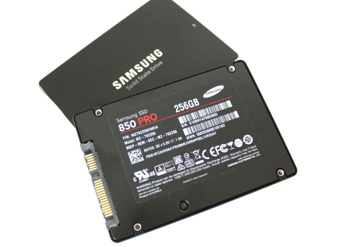

Videocards and cpu's
Now I'm going to offer a list of the best computer parts available today. I personally the 980ti GPU and the i5 4670k CPU. Althought, I know there are more updated gear available.

GeForce GTX 1080 If you want the fastest graphics card on the planet, it's a no-brainer: the GeForce GTX 1080 wins, hands down. Okay, sure, the $1200 Titan X beats it, but that's twice the price for 20-30 percent more performance. In our testing, the GTX 1080 is over 30 percent faster than the previous GTX Titan X and GTX 980 Ti(the one I have), and it uses almost 30 percent less power.
The GTX 1080 is one of the few single GPU solutions capable to tackling 4K gaming. This also makes the GTX 1080 the best multi-GPU solution for gaming at 4K if there's no concern for keeping a budget in check, though honestly we'd recommend you go for one first and wait to see if you need the second.

GeForce GTX 1070 If there was any question about which card would claim the top spot, general availability for the GTX 1070 at a price starting at Nvidia's official MSRP of $380 has sealed the deal—not so much for our UK readers, however, where the lowest price is around £390. As we show in our full review, the 1070 manages to match or exceed the GTX Titan X and GTX 980 Ti in every game at every setting we tested…and it does so at a much lower price point while using significantly less power.
Graphics cards such as the Gigabyte GTX 1070 WindForce run very cool and quiet even when under full load gaming. With no competition in this price range the GeForce GTX 1070 is the obvious option and a great one at that.

i7-4790K The Core i7-4790K runs at a 4GHz base clock, with a 4.4GHz Turbo Mode. That's an increase of 15 percent over the Intel Core i7-4770K's 3.5GHz base/3.9GHz Turbo clock speed, and since CPU performance scales nearly linear with clock speed improvements, it means benchmark results will pick up an extra 10- to 15-percent performance on the newer core.
he old Haswell chips have a reputation for running hot. There are several reasons for this, including a new onboard voltage regulator that puts a major heat generator directly on the CPU die, and Intel's decision to use thermal paste instead of soldering the CPU heat spreader directly onto the chip. The Core i7-4790K fixes this with a new thermal interface material (TIM) between the CPU die and the heat spreader.

Samsung SSD The Samsung SSD 850 Pro has fast performance, high endurance -- you can write a lot of data to it before it becomes unreliable -- and its 2TB capacity is the highest on the market. The drive comes with a lot of useful features, including encryption, and a great performance-boosting mode called Rapid.
Althought, the drive is expensive compared with competing solid-state drives. The Samsung Magician software only works with Windows. It's totally worth it though, I have one as my OS drive and don't regret it
Designed and Developed by: Felix J. Soto Paniagua
Date: December 06, 2016